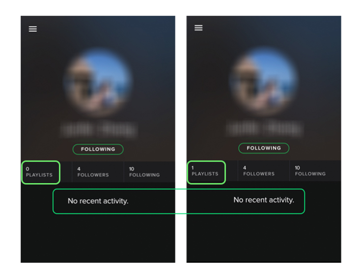
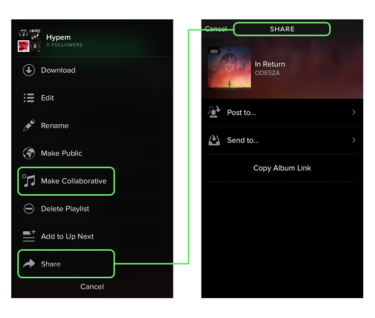
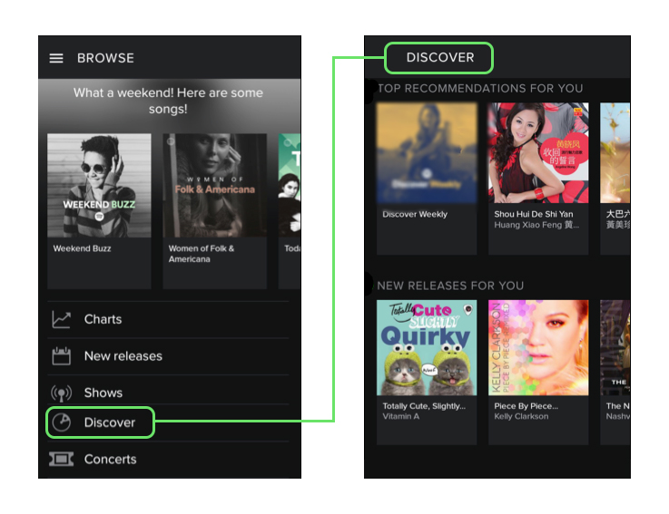
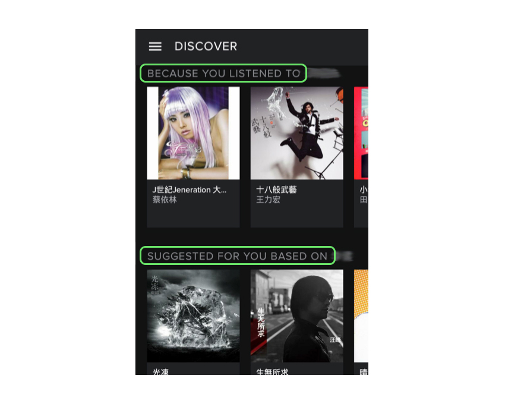
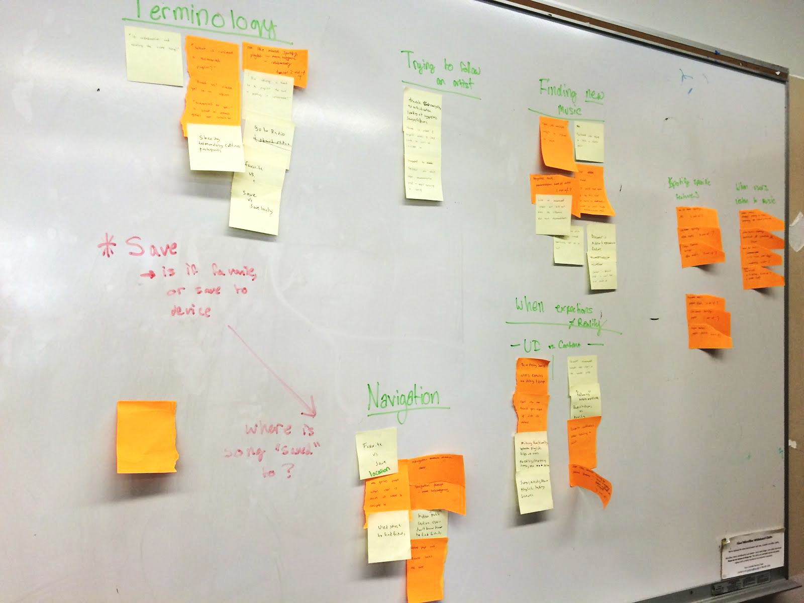

Spotify iOS App Case Study // Redesign
Usability Testing, UI Redesign
Time
Jan. - Mar. 2016
Team
Torin Blankensmith, Rashmi Srinivas, Xiaochen Yu
What I Did
Conducted Heuristic Evaluation, prepared Test Kit, Facilitated Post-Test Sessions, Conducted affinity diagramming
Is the right music always at your fingertips, as promised ?
Challenge
Spotify promised their users “There are millions of tracks on Spotify. So whether you’re working out, partying or relaxing, the right music is always at your fingertips.” Being a Spotify user myself, I challenged myself to dive deeper as a UX designer, and teamed up with Rashmi and Torin to explore whether current content organization and navigation scheme of Spotify iOS App allow the users to access new music easily and efficiently.
Solution
Through a User-Centered Design approach, we performed a 10-week usability testing project, while we developed a full usability study test kit, run 7 testing sessions, completed data compiling and analysis, and created redesign interactive prototype and mockup.
Major Findings
Social Feature Problem | Non-existing Notifications
After asking the participants what they expect to happen after following a friend or an artist, participants expected to be notified about the feeds, such as artists'new releases, friends' new playlists, etc. However, the participants then found that there were no notifications about any of the above, unless a post is created or sent directly to another user.
As shown in the screenshot below, for example, when a friend creates a new playlist, users dont'get any feeds from their end but still with "No recent activity."
Social Feature Problem | Confusing Terminology
When it comes to sharing music playlists using Spotify App, Spotify has two options on its menu navigation: 1) Share and 2) Make Collaborative. Generally speaking, "Share" is meant to have multiple functions on a music App, including sharing the playlist on social media, as well as opening up the playlist for a friend to add songs to the list once it becomes collaborative. Making a playlist collaborative allows the user to then share the playlist with a friend to add to it. These two actions caused confusion for the participants.
Personalized New Music
Another major finding that we revealed is that finding personalized new music can be difficult and overwhelming, which contradicts Spotify’s mission, “...the right music is always at your fingertips.” By personalized new music, we are referring to recommended music suggested by Spotify based on users’ personal music preferences, which could be new releases from artists that users followed, playlist containing songs in the same genre with the ones in users’ library and etc.
Difficulty in Finding Personalized New Music | Hidden Discover Section
Spotify has a specific section called Browse, as shown in the image below, as a main option under the navigation menu. However, the quickly accessible music on the Browse page are not unique music recommendations for different users; most of the contents are either general new released music or music in trend. In fact, Spotify does have a section called Discover for personalized new music for different users; unfortunately, it has been placed in a spot, the fourth option in the list, which seems not to be designed for quick access in the current version of Spotify.
Difficulty in Finding Personalized New Music | Vague Titles
Some titles for recommended music categories in Discover need more clarifications on the differences of the contents under those titles. For example, Spotify labeled recommended music based off artists that users listened with “Because You Listened to...” and “Suggested for You Based on…,” as shown below. When were asked for explaining the differences between the contents under each of the two titles, 6out of 7 participants didn’t give us a confident explanation, with 4 out those 6 guessing that wording could be the only difference other than the contents.
Prototype & Mockup
Heuristic Evaluation
To determine what areas of Spotify mobile our team should focus on, we created a heuristic evaluation. the heuristic evaluation was broken up into larger categories including Navigation menu, Search, Browse, Radio, Your Music, Customization, and Error messages. These categories contained evaluation questions such as “are the user’s past keywords saved? Do the icons relate to the labels in the sub navigation?” and so on.
Each team member explored the app and answered the evaluation questions with a “yes” or “no” as applicable. After compiling all three evaluation forms, we found that the areas that were least effective in terms of functionality and clarity included finding music through the Browse page, consistency between terminologies, and using the hamburger icon to navigate and explore the app.
Refining Research Questions
With the information from the Heuristic Evaluations, we then brainstormed a list of possible research questions which would reflect how we design our usability test later on. An example of our list of questions is below:
- How easily can users create a radio station?
- Can users distinguish between creating a radio station and creating a playlist?
- How easily can users create a playlist?
- How easily can users add songs to a playlist and share the playlist with a friend?
- How many clicks on average does it take the user to access their recommended songs?
- Can users locate and play a song they saved in their playlist?
- Do users expect instant access to recommended music on the frontpage of Browse?
- Do the icons used in the user interface of Spotify Free mobile App help users to better implicate the according functions of the terms?
- Do Spotify users use the social features?
- What the social features of a music player would bring to users beyond music accessibility?
- How often do users refer to the navigation menu to accomplish certain task when there are alternative paths?
These questions started off as too specific and task-related, however we focused on what all of the questions had in common. An overarching theme throughout these questions centered around the user’s ability to find new music through various methods including Browse, Radio, and social features. Going back to Spotify’s mission to make music as a whole accessible to their users - we decided to focus our usability study on tasks that show us how users find, share, and music and playlists, and how users customize their content. With this area of focus, we were able to evaluate where the Spotify mobile app could be improved to make these core processes easier for their users.
Participants & Screening Questions
For the study, we recruited a total of seven participants. Four participants are female, three are male, and all participants are college students at the University of Washington between the ages of 18-25 years old. All of the participants chosen met our pre-screening requirements and listen to Spotify on their mobile devices an average of 2-4 hours per day. Six participants use an iPhone and one participant uses an Android device.
Our target audience for Spotify Mobile are college-aged students who are familiar with the app, but do not necessarily know about every feature Spotify mobile has to offer. Due in part to our screening questionnaire and environment, all of our study participants matched the criteria to be the target audience.
Pre-Test Questionnaire
Before starting the task walkthroughs, we asked each participant to answer a few questions to get an idea of their experience with Spotify mobile. Questions asked included how the participant would rate the ease of use of Spotify mobile on a Likert scale of 1-10, 10 being the most difficult.
- What is the participant's favorite features on Spotify?
- What are the other music streaming services the participant uses, if any?
- In what situations does the participant use Spotify mobile?
The pre-test questionnaire took an average of 4 minutes to complete per participant.
Task Design & Scenarios
Since we wanted to measure the ease and efficiency of Spotify’s mobile features, we broke up the usability test into six tasks - each testing out a different action that a user might do to discover new music through Spotify recommendations, radio, and social circles/friends. Some tasks contained subtasks that further tested out the same feature, or otherwise was an action that would naturally follow in the task order. Follow up questions were asked depending on the actions of the participant during the task.
For each task we started by providing the participant with an applicable scenario to provide context and observe the participant’s natural response. From our screening questionnaire, we were able to determine that most users use Spotify mobile when they are walking to/from a destination, working out, or at a social event without access to their laptops or tablets.
Task 1
Scenario: You are taking a bus home and you want to listen to something new that's not in your playlist.
Task: Find a recommended playlist by Spotify that you are interested in and play a song in the playlist
Task 2
Scenario: You really enjoy listening to a specific artist and you want to listen to a similar artist. Please go back to the Navigation page and
Task: Discover a similar artist and play a song Follow up question: What content do you expect to be under each of these subheadings? (“suggested for you based on…” and “because you listened to…”)
Sub Task: Now follow the suggested artist
Follow up question: What type of content would you expect to be notified about
Task 3
Scenario: You have a favorite artist that you listen to when you go on a run. This time, you want to listen to a radio station with songs from that artist. Please start at the Navigation page and
Task: Start a radio station on an artist that you have recently played
Task 4
Scenario: You want to rearrange the order of the songs in one of your playlists for a party at your house tonight. Please start at the Navigation page, open a playlist and
Task: Change the order of the first and second song.
Sub Task 1: You really like the first song in the playlist, go ahead and save it
Sub Task 2: Navigate to where the location of the saved song.
Task 5
Scenario: One of your friends has had good music suggestions and you want to take your friendship to the next level on Spotify
Task: Starting from the Navigation page, follow a friend on Spotify.
Follow up question: Now that you are following a friend, what type of content would you expect to be notified about?
Sub Task: Play a public playlist from your friend’s Spotify music collection
Task 6
Scenario: You are having a party tonight and want to create a new playlist.
Task: Please start at the navigation page and create a new playlist and include a song of your choice.
Sub Task: Your friend is co-hosting this party with you and you would like to share this playlist with him/her.
Post-Task Questionnaire
Outside of sub-tasks and follow up questions, each task was followed by a general post-task questionnaire. Questions included whether or not the participant completes the task, the time it took to complete the task, and on average if it took the participant more, less, or average time to complete than they expected.
Each post-task questionnaire took an average of 1 minute to complete.
Post-Test Questionnaire
The purpose of the post-test questionnaire was to debrief the entire test with the participant and give the participant time to talk through any particular task or challenge. The questions included how the participant rates the ease of use of Spotify mobile on a Likert scale of 1-10, 10 being the most difficult; what tasks the participant enjoyed/did not like, if any; what the participant likes/dislikes about Spotify’s mobile app; and if there were any new features discovered through the usability test.
On average, the post-test questionnaire took 5 minutes to complete for each participant.
Usability Test Set Up
Our usability tests were held at the Allen Research Commons at the University of Washington. The Allen Research Commons is an open space on the bottom floor of a library containing multiple tables, booths, and group work areas. This environment was chosen for usability testing because it is an area where students often work in groups, therefore the noise level is comfortable for people to talk at a normal volume. We wanted our participants to be able to talk freely and openly during testing without worrying about being too loud in a library setting.
Researcher Roles & Data Collection
For each usability test, we had one moderator, one quantitative notetaker, and one qualitative notetaker.
Prior to running the usability tests, we had set up a Google Form containing the pre-test questionnaire, 6 post-task questionnaires, and the post-test questionnaire. The quantitative note-taker filled out one Google Form for each participant.
We also used a usability tool called Lookback on the testing device. Lookback recorded a screen-captured video of the user going through the screens for each task. After uploading the video for each participant, Lookback automatically marked timestamps for when the user switched screens. This allowed us to collect quantitative data on the time it took the participants to complete each task.
Qualitative notes were collected via the think-aloud protocol conducted on each participant. The qualitative notetaker listen and typed up everything the participant said out loud and also watched the testing device marking down the interactions.
Data Compiling
We compiled our qualitative and quantitative raw data into a single Google Doc, attached in Appendix, which is organized by tasks. The quantitative data includes the timing for task completion, variability for task timing, likert scale in pre-test and post-test questionnaires, and task completion evaluation in post-task questionnaires.
Affinity Diagram & 4 Themes
We started our data analysis with reading through the compiled data file. Dividing the file into 3 portions, each team member read through the data and jotted down information discovered onto sticky notes. We ended up with putting all the sticky notes randomly on the wall, and grouping them into 4 different themes: unclear terminology, confusing navigation, the differences between participants’ expectation and reality, struggles to find personalized new music and struggles to find recommended artists.
Analysis Approach
Based off the themes we summarized through affinity diagraming, we went through the compiled raw data again, attaching evidences corresponding to each theme, both qualitatively and quantitatively.
I. Unclear Terminology
The Spotify mobile App contains terminologies that are unclear in accordance with the outcomes of those actions.
“Save” a Song
- Participants struggled determining if this action would save the song locally to the phone, or to a playlist.
- 4 out of 7 participants were unsure where the saved songs were stored when asked a follow up question about saved song location.
“Share” a Playlist vs. “Make Collaborative” a Playlist
- Participants were unsure about the differences between “share” and “make collaborative.”
- Participants were unsure about the what will be brought to them if they make a playlist collaborative.
- 5 out of 7 participants questioned the corresponding results of these two options
Music Recommendation Titles
- There are several sections under Spotify’s recommended music labeled with different titles, and some of the titles seemed to be repetitive and overlapping.
- Participants were asked to describe what contents they would expect to see under “Because You listened to...” and “Suggested for You based on…,”
- 6 out of 7 didn’t provide us confirm explanations about the differences between those two titles
II. Confusing Navigation
The information flow under navigation menu makes some features hidden and hard to find.
Overuse/isolated use of Search Bar
- Search is used the most when a user is not sure where or how to find a friend, artist, song, or playlist.
- Search bar was used to look for features that were present elsewhere on the app (ex. Personal profile, recommended songs)
Hidden “Saved” Songs
- Depending on how the user interpreted the “save” function, users were unaware that saved songs were included under the “Songs” section in “My Library”
- 4 out of 7 participants took multiple tries to find where saved songs were located in the app
III. User’s Expectations of Features vs. Reality
Expected Notifications from Friends
- After following a friend on spotify, participants expected to either be notified about, or be provided with a way of viewing new playlists and songs that their friend added to spotify.
- 7 out of 7 participants expected Following a Friend on Spotify to bring them notifications of friends’ activities, such as new playlists they created, artists they followed, songs they liked and etc. However, none of those expected social notifications are in the current version of Spotify Mobile.
Expected Notifications from Artists
- After following an artist on spotify, participants expected to either be notified about, or be provided with a way of viewing the artist’s new song release, albums and potentially concerts that are nearby.
- 7 out of 7 participants expected following an Artist on Spotify to bring them notifications of artists’ activities, such as new release, playlists created, concerts schedule and etc.
Expected to Find Recommended Music on Browse or Home Page
- Users expected recommended playlists and songs to be in the browse page and the home page instead of inside the subcategory of Discover.
- 5 out of 7 participants didn’t find top recommended music in Discover without hints from the moderator.
IV. Struggles to Find Personalized New Music
Random Titles for Personalized New Music
- Once the users found the Discover page, many of them expressed that there is a large quantity of recommended music, but they were not sure what the differences were between similar recommendations
- 3 out 7 participants went for “Just for You” section on top of the Home page than “Top Recommendations for You” in Discover when asked to play a recommended playlist by Spotify.